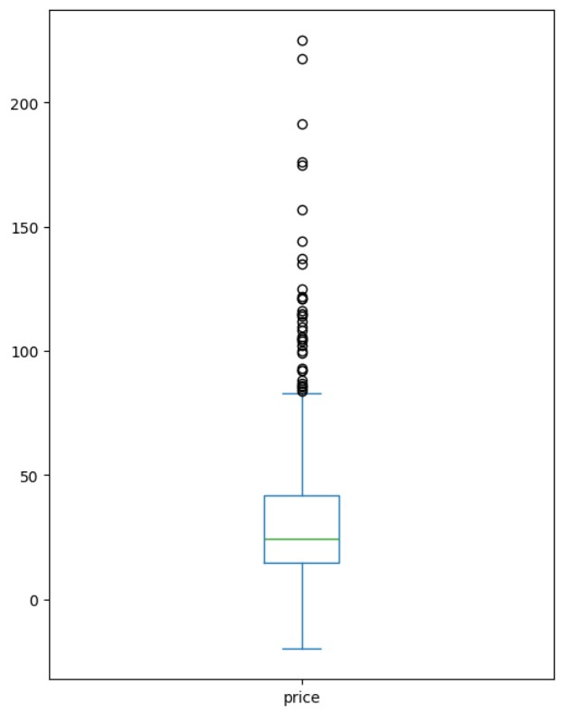
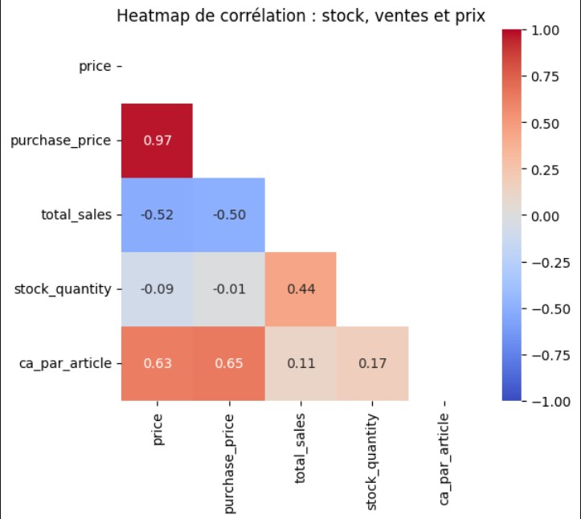

Visualisation & Détection des Outliers


Analyse univariée de la distribution des prix (Boxplot / Z-Score) et matrice de corrélation entre prix, ventes et stocks.
Contexte & Phase 1 : Consolidation & Nettoyage
La boutique en ligne de vins Bottleneck rencontre des difficultés pour analyser ses ventes en raison d'outils artisanaux et d'identifiants non synchronisés entre l'ERP interne (`product_id`) et la base de données du site web WooCommerce (`sku` / `id_web`).
La première phase a consisté à effectuer les jointures via la table de correspondance et à corriger plus de 8 types d'erreurs de données :
- Incohérences de stock : Correction des statuts `stock_status` qui n'étaient pas synchronisés avec `stock_quantity` (ex. quantités nulles marquées "en stock").
- Quantités négatives : Identification et nettoyage des valeurs de stock anormales.
- Formats de clés SKU : Détection et filtrage des SKU invalides ou manquants (85 lignes vides filtrées sur la table web).
- Mise en correspondance : Consolidation finale réussie révélant 91 produits ERP n'ayant pas encore d'équivalent en vente en ligne.
Phase 2 : Analyses Métiers pour le CODIR
💶 Chiffre d'Affaires & Règle des 20/80
Calcul d'un CA total du site web de 143 680 €. L'analyse Pareto révèle que 52,5 % des références génèrent 80 % du chiffre d'affaires global.
📊 Détection des Prix Aberrants (Z-Score & IQR)
Analyse de la distribution des prix via l'écart interquartile (seuil haut à 83,40 €) et le Z-Score (seuil à 114 €). Les 32 "outliers" détectés correspondent à des grands crus de luxe (ex. bouteille à 225 €) et non à des erreurs de saisie.
📦 Valorisation & Rotation des Stocks
Valorisation totale du stock disponible établie à 298 627,66 € (17 822 unités). Identification des tops produits en sur-stock (jusqu'à 31 mois de stock pour certaines références haut de gamme).
📉 Analyse des Marges & Corrélations
Mise en évidence d'une très forte corrélation (0.98) entre prix d'achat et prix de vente. La matrice montre également une corrélation négative (-0.52) entre le prix et les volumes de vente, confirmant que les produits très chers se vendent en plus faibles quantités.
Recommandations & Automatisation
- Synchronisation des SI : Automatiser la table de liaison entre l'ERP et le CMS Web pour éliminer les SKU vides et les ruptures de suivi.
- Gestion des Stocks Immobilisés : Mettre en place des campagnes de promotion ciblées sur les vins ayant plus de 12 mois de stock.
- Pérennisation du Code : Export du dataset consolidé sous Excel et documentation du Notebook Python en vue d'alimenter les futurs tableaux de bord de Business Intelligence.